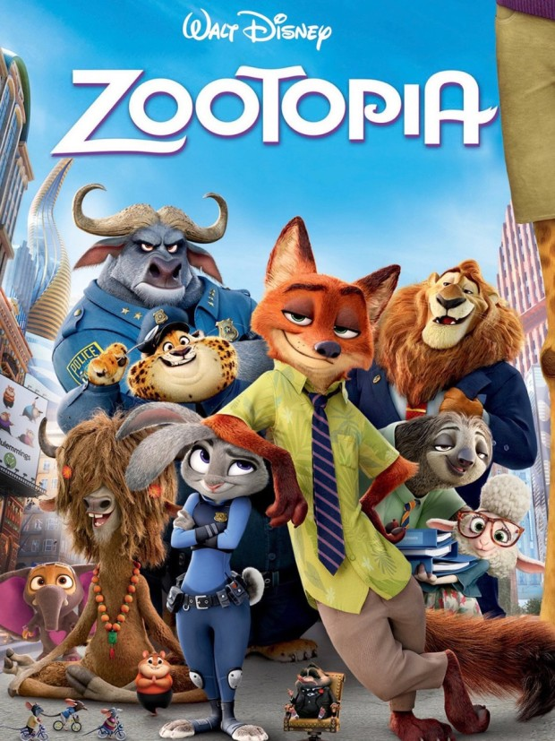

About Judy
‘주디’는 어려서부터 정의로운 경찰을 꿈꿨지만 주변 동물들로부터 ‘토끼는 경찰이 될 수 없어. 다른 형제들처럼 당근 농사를 짓는 게 어떠니?’라는 말을 들으며 환경적인 제약 속에서 어렵게 꿈을 키워갔다. 신념을 가지고 경찰학교에 들어가 우수한 성적을 거두어 수석 졸업을 했지만 기대를 안고 출근한 경찰서에서 ‘주디’가 맡은 업무는 주차 위반 단속이다. 아무도 ‘주디’를 제대로 된 경찰로 봐주지 않고, 그 높은 편견의 벽과 부딪히며 ‘주디’는 자신의 정체성과 꿈을 위해 연쇄 실종사건에 뛰어들게 된다.
주디의 친구들
Judy's Characteristics
- 다소 덤벙대지만 신중하다.
- 자신의 소신을 믿으며, 쉽게 포기하지 않는다.
- 긍정적이며, 정의롭다.
Judy's Friends
형사생활을 하는 주디에게는 든든한 직장 동료인 닉과 도움을 주는 벤자민, 그리고 주디의 능력을 입증하길 원하는 직장 상사 보고가 있다.